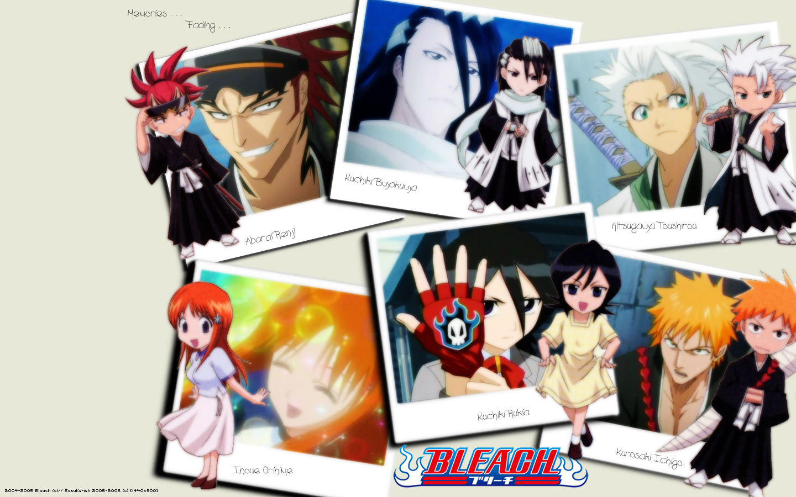

Plot
The anime adaptation of Bleach follows the story of the manga, although introducing several original storylines. In Karakura Town, Ichigo Kurosaki becomes a substitute Soul Reaper when Rukia Kuchiki cannot fulfill her duties after engaging in battle with a particularly powerful Hollow. He later discovers several of his friends and classmates are spiritually aware and have powers of their own: Uryū Ishida is a Quincy, Orihime Inoue possesses a group of protective spirits known as the Shun Shun Rikka, and Yasutora Sado ("Chad") has strength equal to the Hollows, later defined as being a Fullbringer. When Rukia is sentenced to death for her transgressions in the human world and taken back to the spirit world of Soul Society, Ichigo seeks out the assistance of Kisuke Urahara and Yoruichi Shihōin, unbeknownst to him as being two exiled Soul Reapers, to allow himself and his friends to save Rukia. After battling the many Soul Reapers, it is revealed that high-ranking Soul Reaper Sōsuke Aizen framed Rukia for the crime and has been illegally experimenting on Soul Reapers and Hollows and he plans on taking over Soul Society via use of the Hōgyoku. He escapes into Hueco Mundo, the realm of the Hollows, and later abducts Orihime as she is instrumental in creating the Oken, a power that will allow him to kill the Soul King, the ruler of Soul Society. After Ichigo is trained by the Visards, other exiled Soul Reapers who began exhibiting Hollow powers, he and his friends travel into Hueco Mundo to save Orihime, facing Aizen's army of Arrancars, Hollows given Soul Reaper abilities, who are lead by an elite group of 10 known as the Espadas. After finally reaching Orihime, Aizen reveals her kidnapping was a distraction to allow him to take Karakura Town, as its spiritual energy is what is needed for the Oken. After training from his father Isshin, another exiled Soul Reaper, Ichigo and the Soul Reapers face off against Aizen, Soul Reapers who aligned with his cause, and his most powerful Espadas, resulting in Aizen's surrender and Ichigo losing all his powers. Nearly two years later, Chad reveals to Ichigo that he has found people like him, known as Fullbringers, in a group known as Xcution. The Fullbringers can give up their powers to restore a Soul Reaper's powers and they plan on doing so for Ichigo, who begins to use Fullbring as well. However, it is all a ruse by their leader Kugo Ginjo, a Fullbring and former Substitute Soul Reaper, to steal Ichigo's powers to empower the rest of them. Ichigo ultimately has his Soul Reaper powers restored and defeats Ginjo and the other members of Xcution, and returns to his duty of protecting Karakura Town.
The stories original to the anime are often referred to as filler arcs to allow the manga to move forward.[weasel words] The first original arc is Bount arc, focusing on spiritually-aware humans who are immortal so long as they absorb souls. Their leader Jin Kariya seeks to destroy Soul Society for the constant hunting of the Bount, and he and Ichigo battle for the fate of Soul Society. Another storyline is the introduction of captain Shūsuke Amagai, the replacement for Gin Ichimaru after he joined Aizen in his betrayal. Amagai seeks revenge against Commander Yamamoto for the death of his father; and uses the Kasumiōji family's Bakkōtō weapons in his plans. Ichigo battles Amagai, who acknowledges the shame of his actions and commits suicide. The final original arc features the evil Zanpakutō Muramasa, which has the ability to turn itself and other Zanpakutō into spiritual beings to take revenge on Soul Society for imprisoning its master Kōga Kuchiki. After he is successful, he is double-crossed and transforms into a monstrous creature that Ichigo defeats, but not before Muramasa reveals the intention was to have Soul Reapers and Zanpakutō communicate on equal terms.
Episodes
Bleach is divided into sixteen seasons, five of which are filler arcs of side stories not found in the original material.
| Season and Name | Episodes | Anime Original |
|---|---|---|
| Season 1: The Substitute (2004–2005) | 20 | No |
| Season 2: The Entry (2005) | 21 | No |
| Season 3: Soul Society: The Rescue (2005) | 22 | No |
| Season 4: The Bount (2006) | 28 | Yes |
| Season 5: The Assault (2006–2007) | 18 | Yes |
| Season 6: The Arrancar (2007) | 22 | No |
| Season 7: The Arrancar Part 2: The Hueco Mundo Sneak Entry (2007) | 20 | No |
| Season 8: The Arrancar Part 3: The Fierce Fight (2007–2008) | 16 | No |
| Season 9: The New Captain Shūsuke Amagai (2008) | 22 | Yes |
| Season 10: The Arrancar Part 4: Arrancar vs Shinigami (2008–2009) | 16 | No |
| Season 11: The Past (2009) | 7 | No |
| Season 12: The Arrancar Part 5: Battle in Karakura (2009) | 17 | No |
| Season 13: Zanpakutō: The Alternate Tale (2009–2010) | 36 | Yes |
| Season 14: The Arrancar Part 6: Fall of the Arrancar (2010–2011) | 51 | No |
| Season 15: Gotei 13 Invading Army (2011) | 26 | Yes |
| Season 16: The Lost Agent (2011–2012) | 24 | No |
Other Media
All four feature films based on the Bleach series were directed by Noriyuki Abe, director of the Bleach anime series. Each movie features an original plotline along with original characters designed by Tite Kubo, which is contrary to the normal practice for anime-based films, as the original author usually has little creative involvement. Bleach: Memories of Nobody, was released in Japan on December 16, 2006 and had a limited release in American theaters in June 2008. The second film, Bleach: The DiamondDust Rebellion, was released to Japanese theaters on December 22, 2007. The third film, Bleach: Fade to Black, was released in Japan on December 13, 2008. The fourth movie, Bleach: Hell Verse, was released in Japan on December 4, 2010. In 2010, Warner Bros. confirmed that it is in talks to create a live action movie adaptation of the series with Peter Segal and Michael Ewing have been lined up to produce the movie.
Animax released 13 drama CDs featuring the original voice actors from the series; these drama CDs have only been included as part of the DVD releases.
The popularity of the Bleach anime resulted in the series of rock musicals, jointly produced by Studio Pierrot and Nelke Planning. There have been five musicals produced which covered portions of the Substitute and Soul Society arcs, as well as three additional performances known as "Live Bankai Shows" which did not follow the Bleach plotline. The initial performance run of the Bleach musical was from August 17–28, 2005 at the Space Zero Tokyo center in Shinjuku. The musicals are directed by Takuya Hiramitsu, with a script adaptation by Naoshi Okumura and music composed by playwright Shoichi Tama. The songs are completely original and not taken from the anime soundtrack. Key actors in the series include Tatsuya Isaka, who plays Ichigo Kurosaki, Miki Satō, who plays Rukia Kuchiki, and Eiji Moriyama, who plays Renji Abarai.